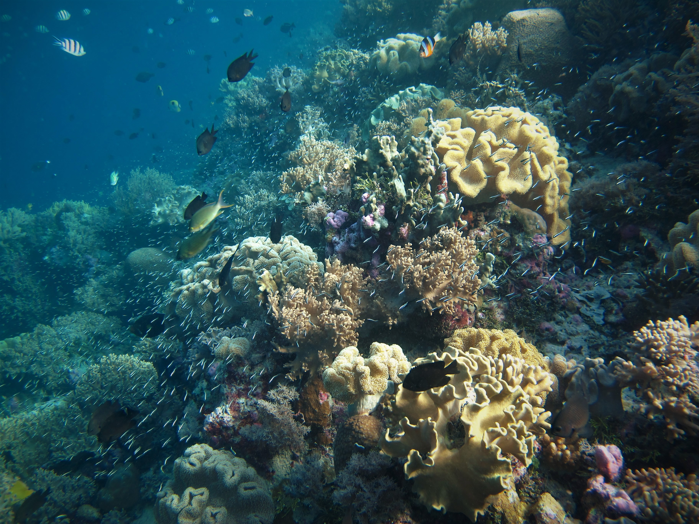

HOME
Wakatobi Seascape. Source: Wikimedia
The chemistry in the ocean is changing, and unfortunately, this change has been having devastating consequences on oceanic wildlife, our enviornment, and many different ecosystems. The pH levels of the ocean are dropping at alarming rates, signaling a bleak future.